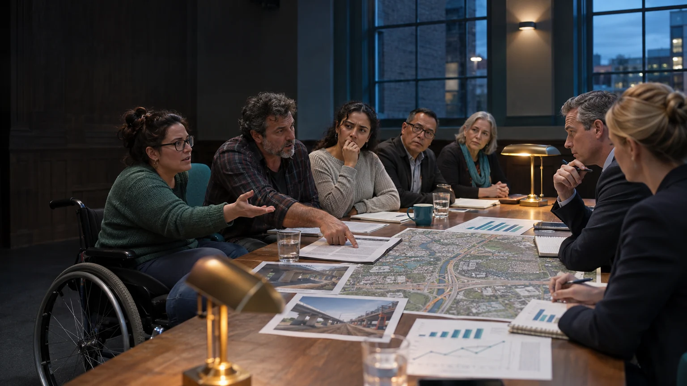

A 24/7 civic establishment
From interest
to a site brief.
Bring a selected overlap, current room evidence and a working operating scenario into a reviewable proposal.
Working exploration · Brisbane · 7 November 2026
An imagined urban studio where people turn practical ideas into working projects. AI-generated concept image.
Image credit ↗A site brief people can examine
Put purpose, space and delivery on the same page.
A strong first brief describes a useful combination and shows how it could operate here.
Start with the people, their activity and the resource they share. Add a current room inventory, a weekly calendar and a transparent cost scenario. Identify the questions that belong to the property parties and those belonging to each service.
The brief can grow through demonstrations and real responses. It does not need to describe the whole Aura ecosystem before one useful overlap becomes understandable.

Your working checklist
Track the parts you have brought together.
Mark a part when you have a useful starting record. The checklist stays in this browser and can be exported with its status.
0 of 10 parts marked
A useful review pack
Four things to put in front of the next participant.
| Part | Contents |
|---|---|
| The proposition | A chosen activity mix, intended people, public value and the reason this place helps. |
| The place | Current plan, room inventory, supporting facilities and the resource assumptions. |
| The operating scenario | Identity and booking arrangements, hosts, calendar, changeovers and continuing support. |
| The resource case | Separate initial capital, recurring costs, proposed income, contributions and unresolved inputs. |